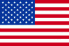

|
Länderinformationen Vereinigte Staaten von Amerika (USA)
1. Das Wichtigste auf einen Blick2. Sehens- und Hörenswertes
3. Politik & Gesellschaft
4. Schmeckenswertes
5. Medien
6. Reisetipps
1. Wissenswertes
|  | Hier
haben wir die wichtigsten Zahlen und Fakten zu Vereinigte Staaten von Amerika (USA)
und der amerikanischen Sprache zusammengetragen. |
Wir freuen uns, dass Sie sich für einen Kurs für amerikanisches Englisch von Sprachenlernen24 entschieden haben. Um Ihnen die Reisevorbereitungen zu erleichtern und Ihnen einen kleinen Vorgeschmack dessen zu geben, was Sie in den USA erwarten wird, haben wir hier Wissenswertes, Wichtiges, Kurioses, Interessantes, Kulinarisches und noch vieles andere mehr rund um die Vereinigten Staaten zusammengestellt. Doch zunächst wollen wir Ihnen die Variante des Englischen vorstellen, wie sie als „amerikanisches Englisch“ in den Staaten in aller Munde ist:
 Hoch-
und Umgangssprache
Hoch-
und Umgangssprache
In den
USA ist amerikanisches Englisch die Muttersprache von rund 82 % der
dort lebenden Menschen. Die größte andere weitverbreitete
Sprache ist Spanisch, das von mehr als 10% der Bevölkerung
gesprochen wird. Grund hierfür ist die hohe Zahl an Menschen
hispanischer, also süd- und mittelamerikanischer Herkunft, die
inzwischen etwa 30 und 40 Millionen der amerikanischen Bevölkerung
stellen. Vor allem im Süden der USA - und hier vorwiegend in den
Großstädten - gibt es heute eine große Zahl an
Menschen, die Spanisch als ihre Muttersprache angeben. In Kalifornien
beispielsweise ist heute fast jeder dritte Einwohner hispanischer
Abstammung. Als Alltags- und Umgangssprache gewinnt allerdings auch
unter den hispanischen Amerikanern Englisch zunehmend an Bedeutung.Eine offizielle Amtssprache gibt es in den Vereinigten Staaten nur in einzelnen Bundesstaaten, nicht jedoch auf Bundesebene. Englisch besitzt allerdings de facto die Funktion der Staatssprache. Neben diesen beiden erwähnten Sprachen gibt es auch noch zig andere Sprachen, die von den vielen Einwanderergruppen, aber auch von den Native Americans (den, auch First Nations genannten Ureinwohnern) teilweise noch gepflegt werden.
Das amerikanische Englisch weist eine Reihe, zum Teil gravierende Unterschiede zum britischen Englisch auf, sei es hinsichtlich der Grammatik, der Rechtschreibung, des Wortschatzes oder der Aussprache. Wenn Sie Englisch in der Schule erlernt haben, werden Ihnen diese Unterschiede bei Ihrem Amerikaurlaub rasch auffallen.
In der folgenden Tabelle zeigen wir Ihnen einige exemplarische Unterschiede im Wortschatz des britischen und amerikanischen Englisch:
Unterschiede
im Wortschatz
|
||
British
English
|
Deutsch
|
American
English
|
chemist's
|
Apotheke
|
drugstore
|
ground
floor
|
Erdgeschoss
|
first
floor
|
football
|
Fußball
|
soccer
|
pavement
|
Gehweg
|
sidewalk
|
autumn
|
Herbst
|
fall
|
trousers
|
Hose
|
pants
|
crisps
|
Kartoffelchips
|
chips
|
chips
|
Pommes
frites
|
french
fries
|
biscuits
|
Kekse
|
cookies
|
cinema
|
Kino
|
movies
|
underground
|
U-Bahn
|
subway
|
holiday
|
Urlaub
|
vacation
|
flat
|
Wohnung
|
apartment
|
 Bevölkerung
Bevölkerung
Die
Vereinigten Staaten haben rund 300 Millionen Einwohner. Damit sind
sie heute das Land mit der dritthöchsten Bevölkerungszahl
der Welt - nach China und Indien.
Die
USA gelten als klassisches Einwanderungsland, für das man oft
die Metapher vom melting pot (dem "Schmelztiegel")
hört. Hierfür steht auch der Leitspruch auf dem
US-amerikanischen Wappen, E Pluribus Unum ("aus vielen Eins"),
das die Integration sowohl der vielen Bundesstaaten als auch der
vielen Menschen aus aller Welt in ein großes, vereinendes Ganze
versinnbildlicht. Laut offiziellen Zahlen sind knapp 82 % der
Amerikaner Weiße (Caucasian People), 13 %
Afroamerikaner und 4 % Menschen mit asiatischem Hintergrund. Etwas
über ein Prozent aller Amerikaner sind indigener Abstammung
(Anmerkung: Die etwa 10 % hispanischen Amerikaner wurden bei dieser
staatlichen Erhebung jeweils einer der oben aufgeführten Ethnien
zugeordnet).
Trotz aller Maßnahmen, die zu einer Chancengleichheit, unabhängig von Herkunft, Geschlecht und Ethnie, führen sollten, sind die sozialen Chancen bis heute de facto ungleich verteilt. So ist das Armutsrisiko für Afroamerikaner, Native Americans und hispanische Amerikaner bis heute deutlich höher als das für Weiße und Amerikaner asiatischer Abstammung. Dennoch muss festgestellt werden, dass sich in den letzten Jahrzehnten die Aufstiegschancen für die benachteiligten Gruppen spürbar verbessert haben.
Die durchschnittliche Lebenserwartung liegt in den USA bei rund 78 Jahren und damit im Schnitt der Industrieländer. Das Bevölkerungswachstum liegt bis heute bei einem knappen Prozent
 Fläche
Fläche
Die
Vereinigten Staaten von Amerika umfassen eine Fläche von rund
9,8 Millionen Quadratkilometern und sind damit mehr als doppelt so
groß wie die Europäische Union. Die USA sind nach Russland
und Kanada das drittgrößte Land der Welt. Die Staatsgrenze
zu Kanada ist insgesamt fast 8.900 Kilometer lang (inkl. der Grenze
zwischen Alaska und Kanada). Die Grenze zu Mexiko hat eine Länge
von rund 3.100 Kilometern.
 Währung
Währung
Wenn
Sie nach Amerika reisen werden Sie Ihre Euro-Scheine und Münzen
gegen Dollarscheine und Cent-Münzen eintauschen.Ein Dollar entspricht 100 Cent. Die Centmünzen in Amerika werden alle mit eigenen Begriffen bezeichnet. Ein quarter zum Beispiel entspricht 25 Cent. Ein dime ist 10 Cent wert. Ein nickel sind 5 Cent und ein penny schließlich ist einen Cent wert.
Auf den Dollarscheinen begegnet Ihnen bei jedem Bezahlvorgang amerikanische Geschichte, denn auf den Scheinen sind die Köpfe bedeutender Staatsmänner abgebildet. Auf dem 1-Dollar-Schein werden Sie auf George Washington, den ersten Präsidenten der Vereinigten Staaten treffen. Auf dem 2-Dollar-Schein werden Sie Thomas Jefferson, den Verfasser der Unabhängigkeitserklärung und dritten Präsidenten der USA kennenlernen. Abraham Lincoln den 16. Präsidenten der USA (er führte Amerika durch den Bürgerkrieg, befreite die Sklaven und brachte die USA auf den Weg zur Weltmacht) finden Sie auf der 5-Dollar-Note abgebildet. Vom 10-Dollar-Schein grüßt Alexander Hamilton - neben George Washington einer der Gründerväter der Vereinigten Staaten. Den 7. Präsidenten Amerikas und Gründer der Demokratischen Partei der USA - Andrew Jackson - findet man auf der 20-Dollar-Note. Ulysses S. Grant ist auf dem 50-Dollar-Schein verewigt. Er war im Bürgerkrieg Oberbefehlshaber der Unionsarmee und führte diese siegreich gegen die Armee der Südstaaten. Später wurde er zum 18. Präsidenten der Vereinigten Staaten gewählt. Auf dem 100-Dollar-Schein finden Sie das Konterfei Benjamin Franklins. Er ist ebenfalls einer der Gründerväter der USA und gleichzeitig ein bedeutender Schriftsteller der amerikanischen Literaturgeschichte.
Bei der Schreibung von Geldbeträgen sollten Sie darauf achten, dass das Währungszeichen ($) immer vor dem Betrag steht.
 Bundesstaaten
der USA und ihre Hauptstädte
Bundesstaaten
der USA und ihre Hauptstädte
Die
Vereinigten Staaten von Amerika bestehen aus 50 einzelnen
Bundesstaaten, die sich zu einer präsidialen Republik mit einer
bundesstaatlichen Verfassung zusammengeschlossen haben. Hier finden
Sie eine Liste dieser Bundesstaaten mit ihren Hauptstädten. Im
Klammern hinter dem Bundesstaat finden Sie die gebräuchliche
Abkürzung. Diese zu wissen ist bestimmt nicht schlecht, denn
wenn Sie zum Beispiel einen Bekannten in Springfield, CO
besuchen wollen, müssen Sie nach Colorado fliegen.
Springfield ist übrigens der zweithäufigste
Städtename in den USA. Es gibt fast 50 Springfields.
Die
Bundesstaaten der USA und ihre Hauptstädte |
|
Staat
(Abkürzung) |
Hauptstadt |
Alabama (AL) |
Montgomery |
Alaska (AK) |
Juneau |
Arizona (AZ) |
Phoenix |
Arkansas (AR) |
Little Rock |
Colorado (CO) |
Denver |
Connecticut (CT) |
Hartford |
Delaware (DE) |
Dover |
Florida (FL) |
Tallahassee |
Georgia (GA) |
Atlanta |
Hawaii (HI) |
Honolulu |
Idaho (ID) |
Boise |
Illinois (IL) |
Springfield |
Indiana (IN) |
Indianapolis |
Iowa (IA) |
Des Moines |
California (CA) |
Sacramento |
Kansas (KS) |
Topeka |
Kentucky (KY) |
Frankfort |
Louisiana (LA) |
Baton Rouge |
Maine (ME) |
Augusta |
Maryland (MD) |
Annapolis |
Massachusetts
(MA) |
Boston |
Michigan (MI) |
Lansing |
Minnesota (MN) |
St. Paul |
Mississippi (MS) |
Jackson |
Missouri (MO) |
Jefferson City |
Montana (MT) |
Helena |
Nebraska (NE) |
Lincoln |
Nevada (NV) |
Carson City |
New Hamshire (NH) |
Concord |
New Jersey (NJ) |
Trenton |
New Mexico (NM) |
Santa Fe |
New York (NY) |
Albany |
North Carolina
(NC) |
Raleigh |
North Dakota (ND) |
Bismarck |
Ohio (OH) |
Columbus |
Oklahoma (OK) |
Oklahoma City |
Oregon (OR) |
Salem |
Pennsylvania (PA) |
Harrisburg |
Rhode Island (RI) |
Providence |
South Carolina
(SC) |
Columbia |
South Dakota (SD) |
Pierre |
Tennessee (TN) |
Nashville |
Texas (TX) |
Austin |
Utah (UT) |
Salt Lake City |
Vermont (VT) |
Montpelier |
Virginia (VA) |
Richmond |
Washington (WA) |
Olympia |
West Virginia
(WV) |
Charleston |
Wisconsin (WI) |
Madison |
Wyoming (WY) |
Cheyenne |
 Wo
liegt Dixieland?:
Wo
liegt Dixieland?:
Geographische Sammelbezeichnungen
Geographische Sammelbezeichnungen
Wenn Sie sich mit Ihren neuen Bekannten über deren Heimat unterhalten, werden bestimmt Sammelbegriffe für einige Regionen Amerikas fallen, die Sie zu Ihrer Orientierung kennen sollten.
Mit diesen Begriffen verbinden Amerikaner nicht nur geographische Informationen, sondern auch Konnotationen zur amerikanischen Geschichte und den Menschen, die in diesen Landstrichen leben. Nehmen wir das Beispiel Dixieland: Die Bezeichnung Dixieland wird in den Vereinigten Staaten oft synonym für die Südstaaten (siehe Tabelle unten) verwendet. Damit meint man einerseits eine geographische Bezeichnung, nämlich die Staaten südlich der sogenannten Mason-Dixon-Line, die die Grenze zwischen Maryland und Pennsylvania festlegt. Mit diesem Begriff kennzeichnet man aber auch ein Stück amerikanischer Geschichte: mit Dixieland meint man in historischer Hinsicht, die Südstaaten, die im amerikanischen Bürgerkrieg die Sklaverei beibehalten wollten und gegen die Nordstaaten kämpften. In der Bezeichnung Dixieland schwingt aber auch Musik mit: In New Orleans wurde 1910 der Dixieland Jazz (eine Richtung des Jazz) begründet.
In der nachfolgenden Tabelle stellen wir Ihnen einige weitere, oft benutzte geographische Sammelbegriffe vor. Wo das möglich ist, nennen wir Ihnen die Staaten, die mit diesem Begriff umfasst werden sollen und geben Ihnen in Kürze weitere Informationen zu dieser Bezeichnung.
Geographische
Bezeichnungen
|
||
Bezeichnung |
umfasst: |
weitere
Informationen |
the Bible Belt (der
Bibelgürtel) |
die Staaten von Virginia bis
Florida und die Staaten von Texas bis Kansas |
Als „Bibelgürtel“
bezeichnet man die Regionen Amerikas, die besonders stark vom
Protestantismus geprägt sind. Die Menschen dort gelten als
religiös und eher konservativ. |
Dixieland (Dixieland) |
alle Staaten südlich der
Mason-Dixon-Linie |
Einerseits bezeichnet man mit
diesem Begriff in historischer Hinsicht alle Staaten, die im
amerikanischen Bürgerkrieg für die Sklavenhaltung
stritten; andererseits meint man mit diesem Begriff den 1910 in
New Orleans begründeten Musikstil Dixieland Jazz. |
Eastern Seabord
(Ostküste) |
alle Bundesstaaten, die an der
Atlantikküste liegen |
Einerseits eine geographische
Bezeichnung für alle Staaten, die am Atlantik liegen,
andererseits ein historische Begriff für die Gründerstaaten
der USA, die 1776 die Unabhängigkeit von England erreichten. |
The Frontier (die
Grenze) |
nicht genau festzumachen |
Dieser Begriff ist eher ein
historisches Konzept als eine konkrete geographische Bezeichnung.
Mit ihm meinte man in der Vergangenheit die Grenze zwischen der
„Zivilisation“ und der „Wildnis“, die sich
mit der voranschreitenden Besiedelung Amerikas durch die Europäer
immer weiter nach Westen verschob. |
The Middle West/
the Midwest (der Mittlere Westen) |
Illinios, Indiana, Iowa,
Michigan, Missouri, Minnesota, Nebraska, Kansas, Wisconsin, Ohio |
Dieser Begriff entstand aus
der Notwendigkeit heraus, die Staaten im mittleren Westen von
denen der Ostküste abzugrenzen. Diese Staaten zählen
nicht zur Ostküste, sie sind aber auch nicht Teil des Wilden
Westens (siehe the
Frontier und the
Wild West). |
New England
(Neuengland) |
Connecticut, Maine,
Massachusetts, New Hampshire, Rhode Island, Vermont |
Dieser geschichtliche Begriff
versammelt die ersten Siedlungen der Engländer auf
amerikanischen Boden. |
The Rustbelt / the
Manufacturing Belt (der Rostgürtel) |
die an die Großen Seen
angrenzenden Gebiete |
In geographischer Hinsicht
bezeichnet man mit diesem Begriff alle Gebiete, die an die Großen
Seen im Nordosten der Vereinigten Staaten angrenzen. In
historischer Hinsicht meint man das älteste Industriegebiet
der Staaten. Dort war zuerst die Textilindustrie, dann der
Steinkohle- und der Erdölabbau und schließlich im 20.
Jahrhundert die Lebensmittel- und die Autoindustrie angesiedelt.
Seit den 1970er Jahren schwindet die Bedeutung dieser Region
beständig und mittlerweile hat die traurige Bezeichnung
"Rostgürtel" für sie eingebürgert. |
The South (der Süden) |
alle Staaten südlich der
Mason-Dixon-Linie |
Geographische Bezeichnung für
alle Staaten im Süden der USA. |
The Southwest (der
Südwesten) |
Arizona, New Mexico, Texas,
Oklahoma |
Sammelbegriff für die
Bundesstaaten im Südwesten der Vereinigten Staaten. |
The Sunbelt (der
Sonnengürtel) |
Arizona, Florida, New Mexico,
Kalifornien |
Mit diesem Term bezieht man
sich auf die sonnenverwöhnten Landstriche der USA. Die
Bezeichnung umfasst beliebte Urlaubsregionen der Amerikaner. |
The
West (der Westen) |
Kalifornien, Nevada, Colorado |
Mit diesem Begriff werden die
Staaten im Westen der USA umfasst. |
The Wild West (der
Wilde Westen) |
Bundesstaaten westlich des
Mississippi |
Diese Bezeichnung umfasst den,
mit Klischees besetzten und verklärten Begriff der
Bundesstaaten westlich des Mississippi. Von hier aus wurde die
Urbanisierung und Besiedelung durch die europäischen
Einwanderer langsam gen Westen vorangetrieben.
|
 Ökonomische
Situation
Ökonomische
Situation
Die Vereinigten Staaten sind die größte Volkswirtschaft der Welt mit einem jährlichen Bruttoinlandsprodukt von fast 14 Billionen US-Dollar (umgerechnet sind das 8,9 Billionen Euro; Stand 2008). Der Dollar ist bis heute die wichtigste Leitwährung der Welt und dient in vielen der globalen Wirtschaftsbranchen als das wichtigste Zahlungs- und Abrechnungsmedium. So wird beispielsweise der Rohölpreis weltweit immer in US-Dollar angegeben.
Ein großes Problem der amerikanischen Ökonomie stellt die hohe negative Außenhandelsbilanz dar, bei der die Höhe der Einfuhren jene der Ausfuhren um mehr als 800 Milliarden Dollar übersteigt.
Die USA sind dennoch bis heute, trotz vielerlei ökonomischer und politischer Probleme, eines der wohlhabendsten Länder der Welt.
 Zeitzone
Zeitzone
Die
USA sind in fünf unterschiedliche Zeitzonen unterteilt. Je
nachdem, wohin Sie reisen, müssen Sie Ihre Uhr sechs bis zehn
Stunden zurückstellen. Den geringsten Zeitunterschied gibt es zu
den Staaten der Ostküste. Wenn es bei Ihnen zu Hause in Berlin
beispielsweise 12 Uhr mittags ist, zeigt die Uhr in New York City
erst 6 Uhr morgens an. Die größte Zeitverschiebung findet
zu den beiden Bundesstaaten Hawaii und Alaska statt. Hier beträgt
der Zeitunterschied zu Mitteleuropa minus zehn Stunden.
Im nächsten Kapitel finden Sie ausgesuchte Reiseempfehlungen unserer Redakteure.